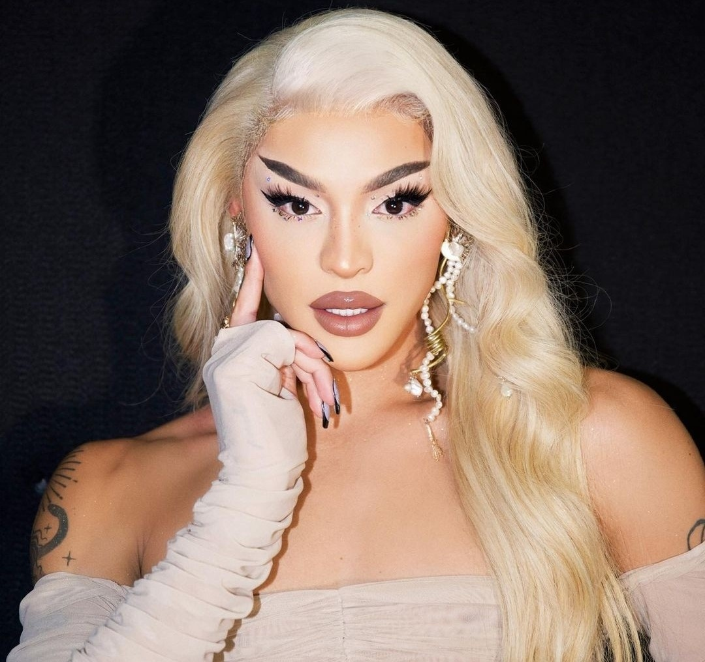

Phabullo Rodrigues da Silva, conhecido mundialmente pelo
nome de Pabllo Vittar é uma cantora, drag queen e
apresentadora brasileira nascida em São Luís, Maranhão,
em 1 de novembro de 1993. Sua carreira é marcada por um
incrível sucesso como artista musical drag queen, e ela é
reconhecida por influenciar o interesse do público em
relação a outros artistas drag queen, bem como artistas
trans e travestis. Além de sua carreira musical, Pabllo é
conhecida por seu ativismo em prol dos direitos das pessoas
LGBTQIAP+
e foi incluída na lista de "Líderes da Próxima Geração"
da revista Time em 2019. A Forbes a nomeou como "a drag queen mais popular do mundo".
Nascida e criada no Maranhão e no Pará, Pabllo encontrou sua paixão pela música desde
cedo, influenciada por sua mãe. Sua jornada na arte das drag queens começou na adolescência,
e suas primeiras performances profissionais chamaram a atenção na internet após o lançamento
da música "Open Bar" em 2015. Ela lançou seu primeiro EP "Open Bar" no mesmo ano. Posteriormente,
Pabllo ingressou no elenco do programa de TV "Amor & Sexo" da TV Globo.

Em 2017, Pabllo lançou seu álbum de estreia, "Vai Passar Mal", que recebeu certificação
de platina e incluiu sucessos como "Todo Dia", "K.O." e "Corpo Sensual". Seus álbuns seguintes,
"Não Para Não" (2018) e "111" (2020), também foram certificados com platina. Sua música é uma
mistura de pop com gêneros regionais brasileiros, como forró eletrônico e eletrobrega.
Além de seu talento musical, Pabllo Vittar é conhecida por quebrar barreiras de gênero
e se expressar de forma fluida. Ela faz aparições públicas tanto como drag queen quanto
em sua identidade civil, demonstrando um compromisso com a diversidade de gênero. A carreira
de Pabllo é uma história inspiradora de sucesso, resiliência e autenticidade.